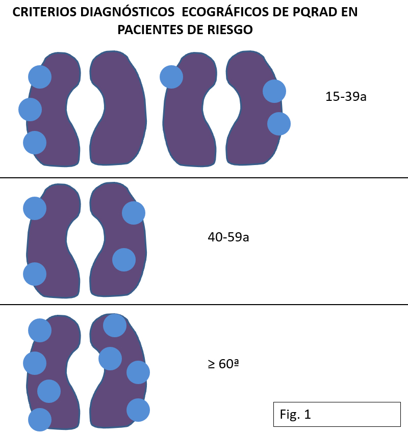
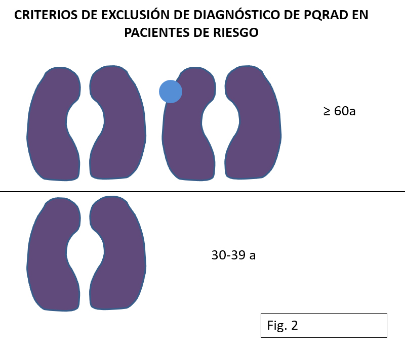
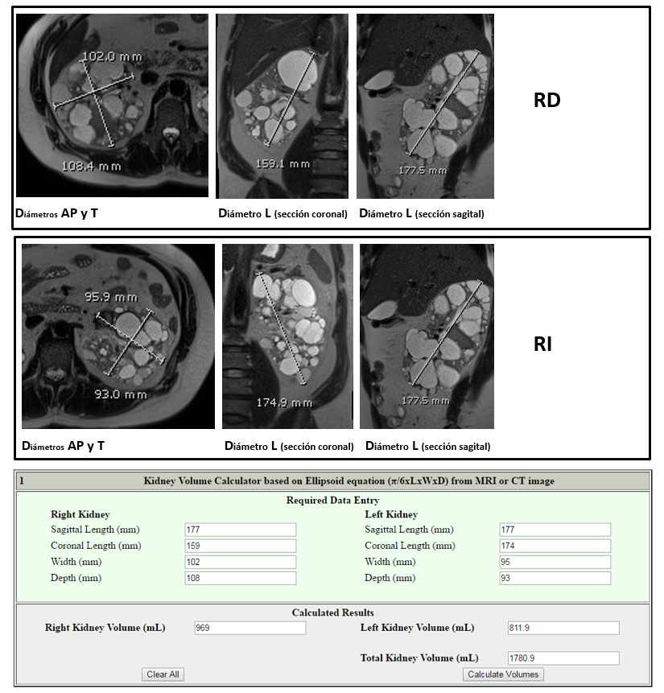
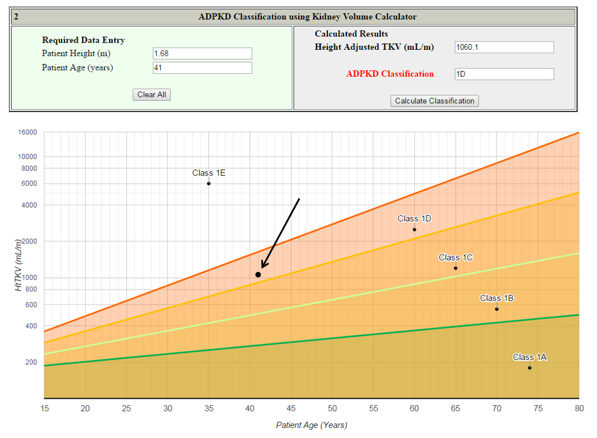

<div class="pages">
  <div data-page="projects" class="page no-toolbar no-navbar">
    <div class="page-content">
    
     <div class="navbarpages">
       <div class="navbar_home_link"><a href="toogle.html"></a></div>
       <div class="navbar_page_center"><b>Especialidades</b></div>
       <div class="menu_open_icon_white"><a href="#" class="open-panel"></a></div>
     </div>     
     <div id="pages_maincontent">
          <h2 class="page_subtitle">Poliquistosis renal autosómica dominante</h2>
          <p><b>Autor/a:</b> Dra. Teresa Martí Ballesté, Radiodiagnóstico, Fundació Puigvert, Barcelona</p>

              <div class="page_single">
                  <div class="tabs">
                      <div class="tab active">
                          <h4>Estudio radiológico de la PQRAD</h4>
                          <p class="nojustify"><b>Información</b></p>
                          <p class="justify">
                            En la poliquistosis hepatorrenal autosómica dominante (PQRAD), los órganos principalmente implicados son los riñones y el hígado, pudiendo existir distintos patrones de afectación, donde pueden predominar los quistes hepáticos, los renales, o hallarse ambos afectados de forma bastante simétrica. Puede haber  quistes pancreáticos, aracnoidales o en vesículas seminales y existe mayor prevalencia de aneurismas cerebrales.
                          </p>
                          
                          <h4>Indicaciones de estudio radiológico</h4>
                          <p class="nojustify"><b>1. Diagnóstico</b></p>
                          <p class="justify">
                            En pacientes de riesgo, es decir, con historia familiar positiva para PQRAD, Ravine et al definieron criterios diagnósticos ECOGRÁFICOS  que permiten realizar el diagnóstico sin requerir estudio genético, con una fiabilidad aceptable tanto si existiese afectación de gen PKD1 como PKD2. Para ello se requiere la presencia de (Fig 1):
                          </p>
                          <p>
                          	
                          </p>
                          <blockquote class="sin">
                          		&bull;&nbsp; 3 quistes renales (uni o bilaterales) en pacientes de 15-39 años. <br />
                                &bull;&nbsp; 2 quistes en cada riñón en pacientes de 40-59 años.<br />
                                &bull;&nbsp; 4 quistes en cada riñón en pacientes > 60 años.<br /><br />
                                
                                Por estos mismos criterios quedan excluidos de diagnóstico de PQARD los pacientes de riesgo (Fig. 2):<br /><br />
                                <p></p>
                                
                                &bull;&nbsp; > 40 años sin quistes renales o un solo quiste.<br />
                                &bull;&nbsp; Pacientes de 30-39 años  sin quistes renales. 
                          </blockquote>
                          
                          <p class="nojustify"><b>2. Crisis quísticas</b></p>
                          <p class="justify">
                            Las crisis quísticas secundarias a hemorragia o infección son frecuentes. El estudio radiológico es fundamental para su diagnóstico, tratamiento y seguimiento. Los quistes hemorrágicos pueden abrirse a la vía urinaria y ser causa de hematuria. Para el estudio de las crisis quísticas:
                          </p>
                          <blockquote class="sin">
                          		&bull;&nbsp; La ecografía es de gran utilidad como prueba inicial. <br />
                                &bull;&nbsp; La tomografía computarizada (TC) permite el diagnóstico, valoración de sangrado activo y el estudio angiográfico, que puede resultar útil para la planificación terapéutica. <br />
                                &bull;&nbsp; La resonancia magnética (RM) también puede ser de utilidad y permitir el estudio angiográfico, pero su accesibilidad suele ser limitada y poco operativa en contexto de urgencia. <br />
                                &bull;&nbsp; La embolización selectiva puede ser necesaria para el control de sangrado y evitar posibles nefrectomías.<br />
                                &bull;&nbsp; La tomografía por emisión de positrones (PET) puede ser empleada también para el estudio de quistes renales o hepáticos infectados, que a veces pueden resultar difíciles de diagnosticar por las distintas técnicas radiológicas.
                          </blockquote>
                          
                          <p class="nojustify"><b>3. Quistes complicados y tumoraciones renales</b></p>
                          <p class="justify">
                            Las crisis quísticas secundarias a hemorragia o infección son frecuentes. El estudio radiológico es fundamental para su diagnóstico, tratamiento y seguimiento. Los quistes hemorrágicos pueden abrirse a la vía urinaria y ser causa de hematuria. Para el estudio de las crisis quísticas:
                          </p>
                          <blockquote class="sin">
                          		&bull;&nbsp; Los quistes complicados siguen la misma clasificación Bosniak que la población general.<br />
								&bull;&nbsp; No existe un riesgo aumentado de carcinoma renal en estos pacientes.<br />
								&bull;&nbsp; Las técnicas radiológicas permiten el diagnóstico y son de utilidad para la realización de técnicas percutáneas para su tratamiento
                          </blockquote>
                          
                          <p class="nojustify"><b>4. Valoraciones volumétricas</b></p>
                          <p class="justify">
                            Durante las primeras fases de la PQRAD, el control médico mediante determinaciones de filtrado glomerular (FG) no permiten una correcta monitorización de la enfermedad ni evaluación pronóstica. La hiperfiltración compensatoria de las nefronas indemnes condicionan una estabilidad relativa del FG a pesar del crecimiento continuo de los riñones, resultado de la expansión de los quistes, que conlleva la  pérdida irreversible de nefronas. <br /><br />
							La medición del volumen renal total (VRT) y el volumen renal total en relación a la altura del paciente (htVRT) resulta fundamental para el seguimiento de la PQRAD en estas fases iniciales, antes de que el FG empiece a decaer, según se deprende de los estudios multicéntricos CRISP ((The Consortium for Radiologic Imaging Studies of Polycystic Kidney Disease Cohort). En estos estudios se conluyó:
                          </p>
                          <blockquote class="sin">
                          		&bull;&nbsp; Que un htVRT de 600 ml/m predice  alcanzar un estadio 3 de ERC en 8 años y su poder predictivo es superior al de la edad, genotipo, género, creatinina en sangre, BUN o la proteinuria. <br /><br />
								&bull;&nbsp; Si bien los riñones de los pacientes con afectación del gen PKD1 tienen en general mayor VRT que los afectos del gen PKD2, el crecimiento anual es similar en ambos (5,51% y 4,99%, respectivamente). <br /><br />
								&bull;&nbsp; El VRT será el parámetro a medir para valorar la respuesta a terapias específicas en pacientes en estadios iniciales.
                          </blockquote>
                          <p class="justify">
                            Los estudios TEMPO, realizados para determinar la eficacia del tolvaptán,  bloqueante de los receptores V2 de la vasopresina, utilizaron como objetivo principal los cambios porcentuales en VRT respecto a placebo. La conclusiones determinaron que el  tolvaptán retrasa el crecimiento renal, siendo del 2,8% el aumento del VRT anual en los pacientes tratados con principio activo versus el  5,5% en los pacientes tratados con placebo.<br />
                            La medida del VRT toma relevancia ante la aprobación por parte de la Agencia Europea del Medicamento (EMA) del uso del tolvaptán para el tratamiento de la PQRAD. La etiqueta del producto validada por la EMA marca como indicación: “el enlentecimiento del desarrollo de quistes y de insuficiencia renal en la PQRAD en adultos con ERC estadios 1-3 al inicio del tratamiento con evidencia de enfermedad rápidamente progresiva”. Esta definición determina dos supuestos que merecen aclaración. Por un lado, subclasifica a los tributarios a tratamiento según edad y función renal y, por otro, determina la indicación solo en rápidos progresadores.  <br />
                            El consenso europeo de un grupo de trabajo de enfermedades hereditarias da una serie de recomendaciones al respecto de estos supuestos, básandose en la evidencia de los ensayos clínicos realizados con este fármaco. Según este consenso y desde el punto de vista radiológico, la valoración de rápido progresador puede  determinarse mediante:
                          </p>
                          
                          <blockquote class="sin">
                          		&bull;&nbsp; Estudios retrospectivos que muestren variaciones en % de crecimiento del htVRT en exploraciones radiológicas seriadas realizadas por técnicas fiables como TC o RM. Para ello hay que disponer de ≥ 3 exploraciones separadas ≥ 6 meses y el crecimiento anual debe ser > 5% para identificar al rápido progresador. En la práctica clínica habitual no suelen existir estudios seriados que permitan realizar este cálculo, por ello se han desarrollado modelos predictivos.<br /><br />

								&bull;&nbsp; Modelo de predicción: basado en  conclusiones de  estudios CRISP:
                                <blockquote class="sin">
                                        &omicron;&nbsp; La presencia de diámetros longitudinales renales > 16,5 cm medidos por ecografía en pacientes < 45 años permite identificar al rápido progresador. <br /><br />
										&omicron;&nbsp; Si este supuesto no se cumple, se utiliza la clasificación propuesta por la clínica Mayo, el  modelo creado por Irazábal et al, para determinar la rápida progresión en base al cálculo del htVRT en una única exploración radiológica realizada por TC o RM y utilizando la fórmula de la elipsoide. 
                                  </blockquote>
                          </blockquote>
                          
                          <h4>Realización de medidas volumétricas en PQRAD</h4>
                          <p class="justify">
                          	Existen distintas técnicas para medir el VRT. Las más precisas requieren un procesado de imágenes que no es viable realizar de forma rutinaria en la práctica clínica. 
                            La fórmula de la elipsoide (π/6xD1xD2xD3, donde D1, D2 y son  los diámetros renales longitudinal, transversal y anteroposterior) resulta sencilla de aplicar, siendo más fiable si las medidas se realizan en base a imágenes de TC o RM. <br /><br />
                            La ecografía puede ser de utilidad como estimación inicial, pero las mediciones volumétricas son groseras y con gran variabilidad inter e intraobservador; sí puede ser útil para descartar como rápidos progresadores a los pacientes > 45 años con diámetro renal longitudinal < 16,5 cm, pero estamos ante un tratamiento de coste elevado, con efectos secundarios y en principio necesario de por vida. Ello requiere mediciones más reproducibles y con un mayor nivel de fiabilidad, como las que se pueden realizar mediante TC o RM.<br /><br />
                            En la página web de la clínica Mayo se halla disponible un asistente <a href="#" onclick="window.open('http://www.mayo.edu/research/documents/pkd-center-adpkd-classification/doc-20094754', '_system');">on line</a> que  puede ser empleado para realizar los cálculos de volumen (Fig. 3). Este sistema solo es válido para:
							</p>
                            <blockquote class="sin">
                          	&bull;&nbsp; Pacientes con afectación renal típica de PQRAD (pacientes monorrenos, con afectación muy asimétrica o quistes muy exofíticos quedan excluidos).<br />
							&bull;&nbsp; Pacientes de 15-80 años. <br />
							&bull;&nbsp; Los diámetros renales deben ser medidos únicamente utilizando imágenes de TC o RM.
							</blockquote>
                            <p>
                            
                            <a href="#" onclick="window.open('http://www.mayo.edu/research/documents/pkd-center-adpkd-classification/doc-20094754', '_system');">CÁLCULO DE VOLÚMENES RENALES POR ASISTENTE MAYO CLINIC</a> 
							</p>
                            <p class="justify">
                          	Hay que tener en cuenta que el diámetro longitudinal debe ser medido en el plano sagital y coronal, debiendo rellenar las casillas correspondientes sin dejar ninguna vacía, ya que el asistente realiza la media matemática entre ambos diámetros longitudinales; de dejar uno vacío, la media se realizará con el valor cero y el volumen resultante será falso.  <br /><br />
Calculado el VRT y tras añadir los datos clínicos de edad y altura (Fig. 4), el asistente sitúa a los pacientes con afectación quística simétrica y homogénea según el modelo definido por Irazábal et al en grupos 1A, 1B, 1C, 1D y 1E. Según esto, los pacientes de los grupos 1C, 1D y 1E serían rápidos progresadores y tributarios a seguir tratamiento con tolvaptán.
							</p>
                            <p></p>
                            
                            <h4>Bibliografía</h4>
	                          <p class="justify">
                              	1. Bae KT, Zhu F, Chapman AB, Torres VE, Grantham JJ, Guay-Woodford LM, et al. Magnetic resonance imaging evaluation of hepatic cysts in early autosomal-dominant polycystic kidney disease: the Consortium for Radiologic Imaging Studies of Polycystic Kidney Disease cohort. Clin J Am Soc Nephrol 2006;1(1):64-9. <br /><br />
                                2. Sallée M, Rafat C, Zahar J-R, Paulmier B, Grünfeld J-P, Knebelmann B, et al. Cyst infections in patients with autosomal dominant polycystic kidney disease. Clin J Am Soc Nephrol 2009;4(7):1183-9. <br /><br />
                                3. Piccoli GB, Arena V, Consiglio V, Deagostini MC, Pelosi E, Douroukas A, et al. Positron emission tomography in the diagnostic pathway for intracystic infection in adpkd and «cystic» kidneys. a case series. BMC Nephrol 2011;12:48. <br /><br />
                                4. Pei Y, Obaji J, Dupuis A, Paterson AD, Magistroni R, Dicks E, et al. Unified criteria for ultrasonographic diagnosis of ADPKD. J Am Soc Nephrol 2009;20(1):205-12. <br /><br />
                                5. Chapman AB, Bost JE, Torres VE, Guay-Woodford L, Bae KT, Landsittel D, et al. Kidney volume and functional outcomes in autosomal dominant polycystic kidney disease. Clin J Am Soc Nephrol 2012;7(3):479-86. <br /><br />
                                6. Bae KT, Grantham JJ. Imaging for the prognosis of autosomal dominant polycystic kidney disease. Nat Rev Nephrol 2010;6(2):96-106. <br /><br />
                                7. Chapman AB, Torres VE, Perrone RD, Steinman TI, Bae KT, Miller JP, et al. The HALT polycystic kidney disease trials: design and implementation. Clin J Am Soc Nephrol 2010;5(1):102-9. <br /><br />
                                8. Torres VE, Chapman AB, Perrone RD, Bae KT, Abebe KZ, Bost JE, et al. Analysis of baseline parameters in the HALT polycystic kidney disease trials. Kidney Int 2012;81(6):577-85. 								<br /><br />
                                9. Torres VE, Meijer E, Bae KT, Chapman AB, Devuyst O, Gansevoort RT, et al. Rationale and design of the TEMPO (Tolvaptan Efficacy and Safety in Management of Autosomal Dominant Polycystic Kidney Disease and its Outcomes) 3-4 Study. Am J Kidney Dis Off J Natl Kidney Found 2011;57(5):692-9. <br /><br />
                                10. Torres VE, Chapman AB, Devuyst O, Gansevoort RT, Grantham JJ, Higashihara E, et al. Tolvaptan in patients with autosomal dominant polycystic kidney disease. N Engl J Med 2012;367(25):2407-18. <br /><br />
                                11. Bae KT, Commean PK, Lee J. Volumetric measurement of renal cysts and parenchyma using MRI: phantoms and patients with polycystic kidney disease. J Comput Assist Tomogr 2000;24(4):614-9. <br /><br />
                                12. Bae KT, Tao C, Zhu F, Bost JE, Chapman AB, Grantham JJ, et al. MRI-based kidney volume measurements in ADPKD: reliability and effect of gadolinium enhancement. Clin J Am Soc Nephrol 2009;4(4):719-25. <br /><br />
                                13. Bae KT, Tao C, Wang J, Kaya D, Wu Z, Bae JT, et al. Novel approach to estimate kidney and cyst volumes using mid-slice magnetic resonance images in polycystic kidney disease. Am J Nephrol 2013;38(4):333-41. <br /><br />
                                14. Gansevoort RT, Arici M, Benzing T, Birn H, Capasso G, Covic A, et al. Recommendations for the use of tolvaptan in autosomal dominant polycystic kidney disease: a position statement on behalf of the ERA-EDTA Working Groups on Inherited Kidney Disorders and European Renal Best Practice. Nephrol Dial Transplant 2016;31(3):337-48. <br /><br />
                                15. O’Neill WC, Robbin ML, Bae KT, Grantham JJ, Chapman AB, Guay-Woodford LM, et al. Sonographic assessment of the severity and progression of autosomal dominant polycystic kidney disease: the Consortium of Renal Imaging Studies in Polycystic Kidney Disease (CRISP). Am J Kidney Dis 2005;46(6):1058-64. <br /><br />
                                16. Irazabal MV, Rangel LJ, Bergstralh EJ, Osborn SL, Harmon AJ, Sundsbak JL, et al. Imaging classification of autosomal dominant polycystic kidney disease: a simple model for selecting patients for clinical trials. J Am Soc Nephrol 2015;26(1):160-72. <br /><br />
                                17. Kline TL, Korfiatis P, Edwards ME, Warner JD, Irazabal MV, King BF, et al. Automatic total kidney volume measurement on follow-up magnetic resonance images to facilitate monitoring of autosomal dominant polycystic kidney disease progression. Nephrol Dial Transplant 2016;31(2):241-8. 
                              </p>
                      </div>
                  </div>
                  
                 
                  <div class="page_single">
                      <ul class="cd-accordion-menu animated">
                        <li class="has-children">
                            <input type="checkbox" name ="group-130" id="group-130">
                            <label for="group-130">+&nbsp; Información</label>
                
                            <ul>

                                <li class="has-children">
                                    <input type="checkbox" name ="sub-group-130" id="sub-group-130">
                                    <label for="sub-group-130">+&nbsp; Poliquistosis renal autosómica</label>
                
                                    <ul>
                                        <li class="has-children">
                                            <a href="poliquistosis_introduccion.html" style="font-size:19px; color:#000;">&bull;&nbsp; Introducción</a></li>
                                            <a href="poliquistosis_diagnostico.html" style="font-size:19px; color:#000;">&bull;&nbsp; Diagnóstico</a></li>
                                            <a href="poliquistosis_hipertension.html" style="font-size:19px; color:#000;">&bull;&nbsp; Hipertensión arterial</a></li>
                                            <a href="poliquistosis_erc.html" style="font-size:19px; color:#000;">&bull;&nbsp; Progresión de la ERC</a></li>
                                            <a href="poliquistosis_embarazo.html" style="font-size:19px; color:#000;">&bull;&nbsp; Embarazo en la PQRAD</a></li>
                                            <a href="poliquistosis_clinica.html" style="font-size:19px; color:#000;">&bull;&nbsp; Clínica</a></li>
                                            <a href="poliquistosis_sangrado.html" style="font-size:19px; color:#000;">&bull;&nbsp; Sangrado quístico</a></li>
                                            <a href="poliquistosis_enfermedad.html" style="font-size:19px; color:#000;">&bull;&nbsp; Enfermedad poliquística</a></li>
                                            <a href="poliquistosis_aneurismas.html" style="font-size:19px; color:#000;">&bull;&nbsp; Aneurismas intracraneales</a></li>
                                            <a href="poliquistosis_otras.html" style="font-size:19px; color:#000;">&bull;&nbsp; Otras características</a></li>
                                            <a href="poliquistosis_pqrad.html" style="font-size:19px; color:#000;">&bull;&nbsp; PQRAD en la infancia</a></li>
                                            <a href="poliquistosis_bibliografia.html" style="font-size:19px; color:#000;">&bull;&nbsp; Bibliografía</a></li>
                                            <a href="poliquistosis_estudio.html" style="font-size:19px; color:#000;">&bull;&nbsp; Estudio radiológico</a></li>
                                        </li>
                                    </ul>
                                </li>
                            </ul>
                        </li>    

                        
                    </ul> <!-- cd-accordion-menu -->
                    <script src="../js/jquery-2.1.4.js"></script>
                    <script src="../js/main.js"></script> <!-- Resource jQuery --> 
                </div> <!--end of page single-->  
              </div>        
          </div>     
      </div>  
    </div>
  </div>
</div>